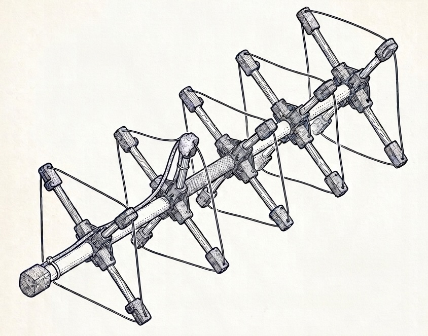

OpenQuad — Calculadora Cubical Quad
Calculadora paramétrica para antena cubical quad modular (EA4IPW). Genera las dimensiones para tu frecuencia, mide la resonancia con reflector + driven montados, y obtén el Vf real y el corte/ajuste necesario en cada elemento.
Fórmulas y procedimiento: ver TEORIA.es.md y README.es.md.

1. Parámetros iniciales
Por defecto Vf = 1.0 (cobre desnudo, longitud máxima). El procedimiento recomendado es construir con Vf = 1.0, medir, y recalcular abajo. Si ya conoces el Vf real de tu cable (ej. 0.91 para PVC fino), introdúcelo directamente.
2. Dimensiones iniciales (Vf = 0.99)
Valores teóricos orientativos según TEORIA § 4. A partir de 4–5 elementos los rendimientos son decrecientes (~0.5 dB por director adicional). dBi = dBd + 2.15.
| Elemento | Perímetro (mm) | Lado (mm) | Spreader (mm) | Varilla recomendada (mm) |
|---|
Lado = perímetro / 4. Spreader = lado × √2 / 2 (centro a esquina). Varilla = spreader − offset del hub − 15 mm (media abrazadera de extremo); la punta queda centrada en la abrazadera, permitiendo ±15 mm de ajuste de Vf sin recortar.
3. Calibración del Velocity Factor (solo necesario para cables aislados)
Construye el conjunto con las dimensiones de arriba, mide la frecuencia de resonancia con el VNA (procedimiento detallado en §4 Ajuste paso a paso) e introdúcela aquí:
Vf = f_medida / f_objetivo. Un Vf < 1 significa que los elementos están
eléctricamente "demasiado largos" y resuenan por debajo de la frecuencia objetivo.
4. Dimensiones recalculadas y ajustes
Introduce la frecuencia medida arriba para ver los ajustes.
| Elemento | P. inicial (mm) | P. nuevo (mm) | Δ perímetro (mm) | Acción |
|---|
Δ negativo = recortar cable. Δ positivo = añadir cable (poco práctico, mejor empezar de nuevo más largo). Las longitudes son del cable total del loop (perímetro completo).
5. Espaciados entre elementos
Independientes del Vf — el boom siempre mide lo mismo para una frecuencia dada.
| Tramo | Distancia (mm) | Acumulado (mm) |
|---|